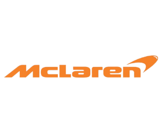
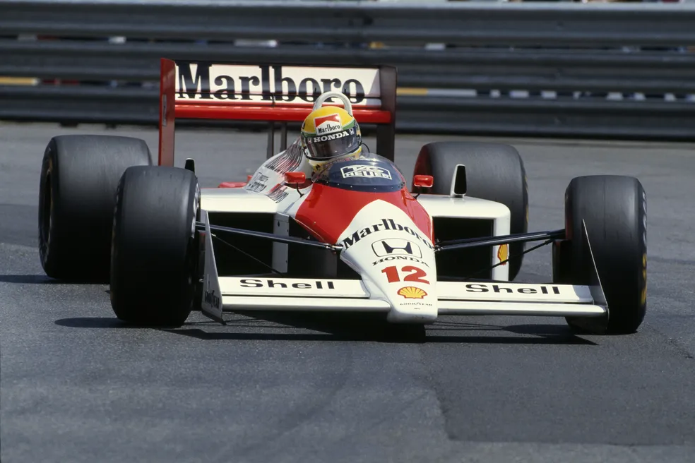
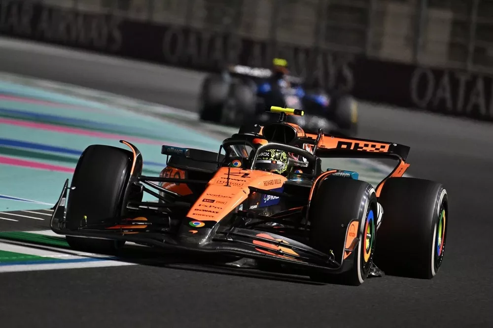

McLaren Racing
A lendária escuderia britânica fundada por Bruce McLaren em 1963.
A McLaren é uma das equipes mais bem-sucedidas e icônicas da história do automobilismo mundial. Com uma trajetória marcada por inovação tecnológica e rivalidades lendárias, a equipe acumula 8 Títulos de Construtores e 12 Títulos de Pilotos.

Pilotos Marcantes
- Ayrton Senna (Três títulos: 1988, 1990, 1991)
- Alain Prost (Três títulos: 1985, 1986, 1989)
- Mika Häkkinen (Dois títulos: 1998, 1999)
- Lewis Hamilton (Título em 2008)
- Lando Norris (Líder da era moderna)
Evolução Histórica
Famosa pelo domínio avassalador na era turbo dos anos 1980 com o modelo MP4/4, pela introdução do primeiro chassi de fibra de carbono em 1981 e por sua tradicional pintura em Laranja Papaya.
Situação em 2026
Para a temporada de 2026, a McLaren mantém sua aliança com os motores Mercedes e conta com a forte dupla de pilotos formada por Lando Norris e Oscar Piastri, brigando diretamente no topo da tabela.
Galeria de Carros Históricos

McLaren MP4/4 (1988)
Venceu 15 das 16 corridas da temporada de 1988 com Senna e Prost.

MCL38 / 2026
Carro projetado para os novos regulamentos técnicos da FIA.